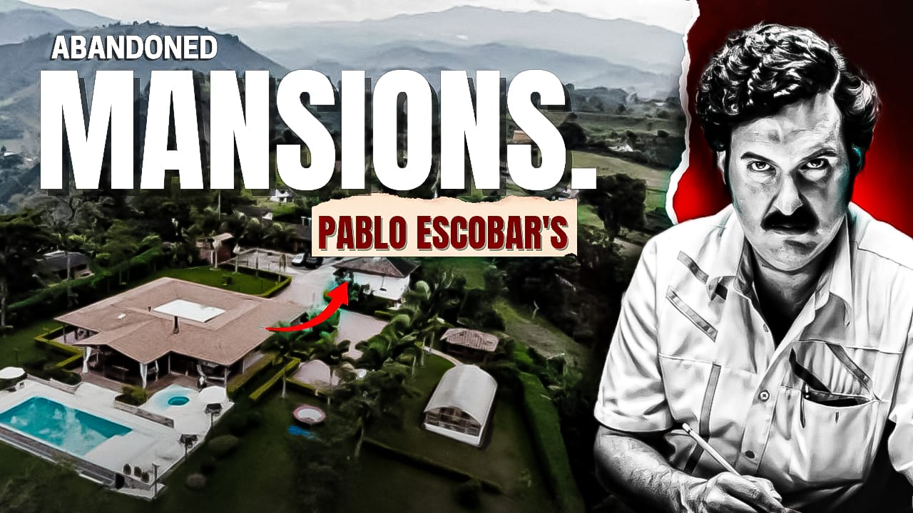

Thumbnail Design

THE TRUTH — Investigative Concept
What it is
A high-impact investigative thumbnail designed to convey authenticity and "insider" knowledge. It uses intense facial expressions and dramatic lighting.
Creative Strategy
The design utilizes "over-the-shoulder" perspective to create an intimate, conspiratorial feel. Deep shadows and high-intensity lighting on the subject's face emphasize the seriousness of the topic. The bold "THE TRUTH" typography is placed at a slight angle to add dynamic energy to the frame.